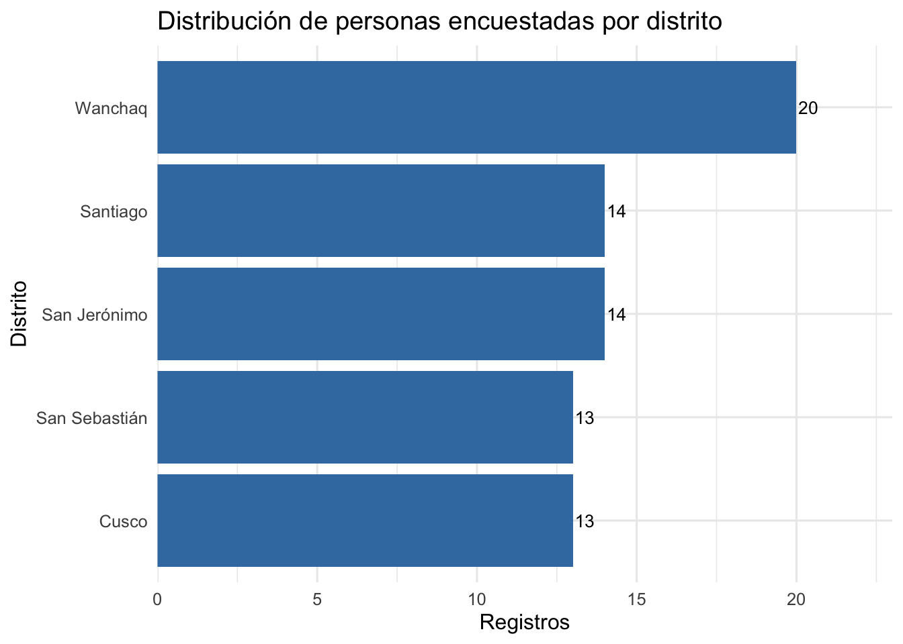
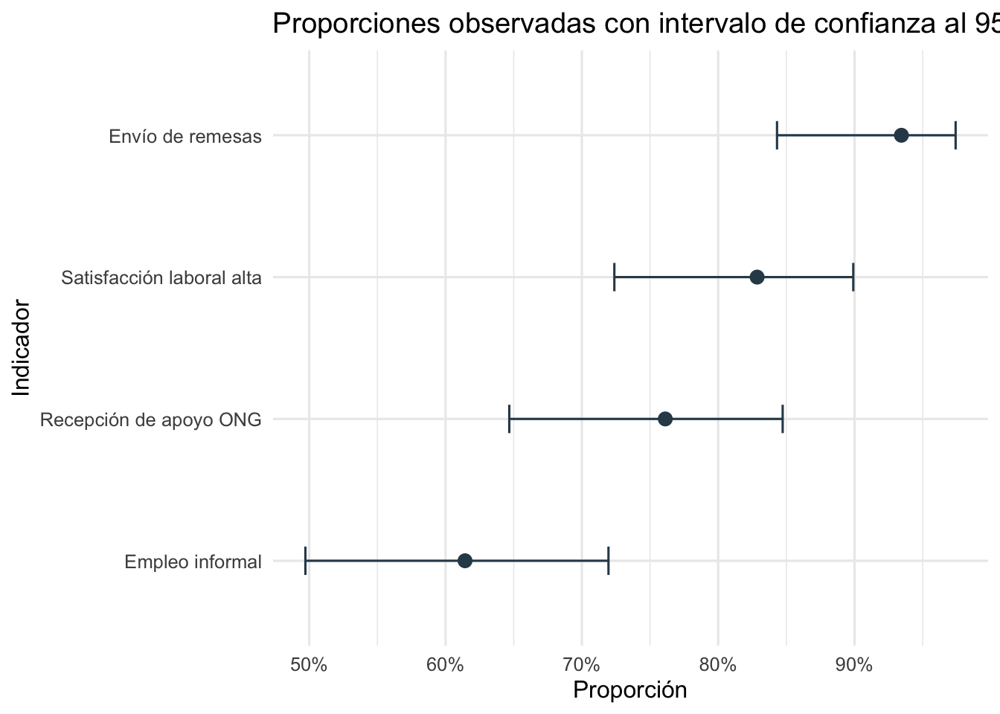
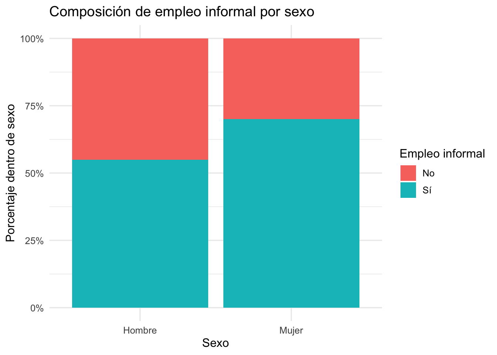
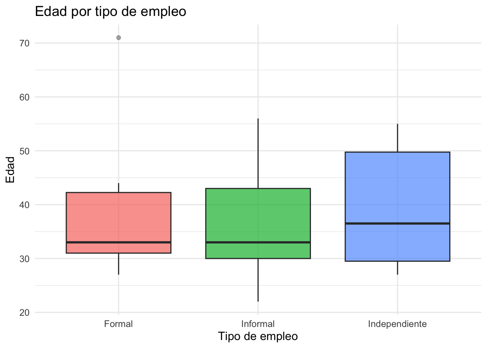
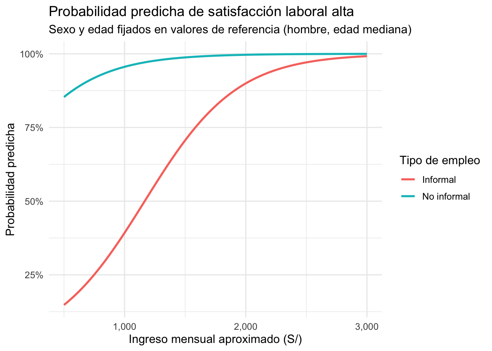
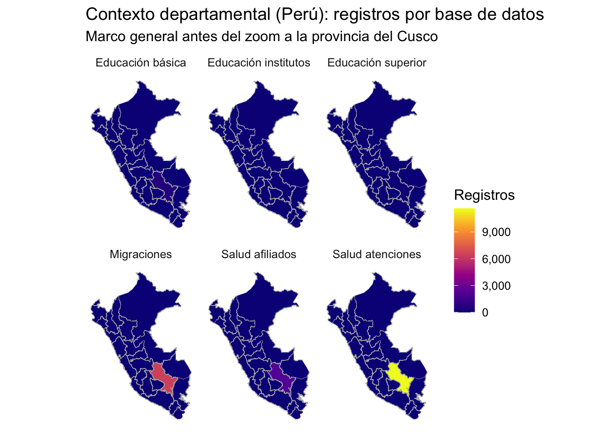
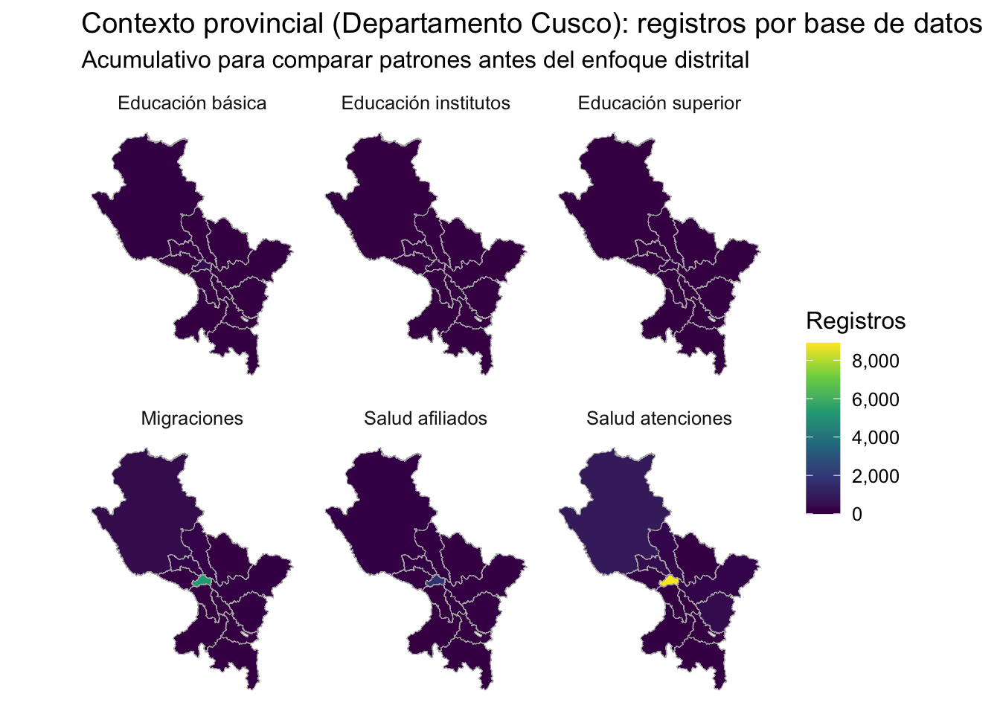
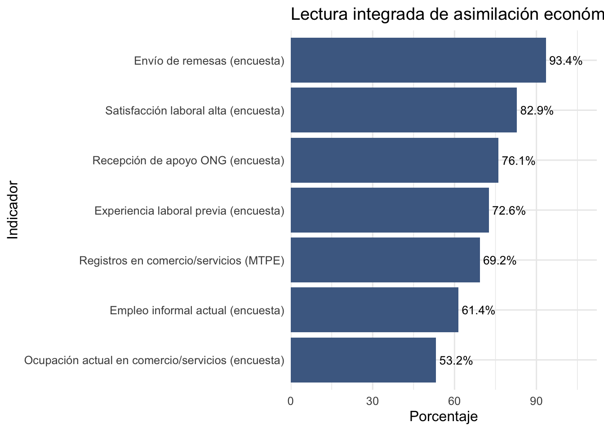

| Tamaño de cada base analizada | ||
| Base de datos | Filas | Columnas |
|---|---|---|
| Trabajo | 20,315 | 19 |
| Migraciones | 6,411 | 23 |
| Salud atenciones | 11,615 | 18 |
| Salud afiliados | 2,191 | 21 |
| Educación básica | 582 | 22 |
| Educación superior | 58 | 19 |
| Educación institutos | 23 | 21 |
| Encuesta | 74 | 74 |
Análisis cuantitativo sobre la población venezolana en Cusco
Informe técnico para tesis
1 Introducción
Este informe presenta un análisis cuantitativo integral sobre la población venezolana en Cusco a partir de registros administrativos de empleo, migraciones, salud y educación.
Se muestran resultados descriptivos, contrastes bivariados con pruebas de significancia y modelos multivariados explicativos, con una lectura orientada a decisiones y redacción de tesis, incorporando además la Encuesta a la comunidad venezolana en Cusco.
En la parte final se incorpora un módulo de georreferenciación enfocado en distritos de la provincia del Cusco, usando shapefiles INEI 2023, para identificar patrones territoriales y zonas de concentración local.
2 Enfoque del informe
Este documento trabaja base de datos por base de datos con tres niveles:
- Descriptivo univariado (tablas con
gt, gráficos conggplot2y versiones interactivas conplotly). - Análisis bivariado con pruebas de significancia.
- Análisis multivariado explicativo con variables dependientes candidatas por fuente.
3 Resumen general
Comentario de análisis. La escala es claramente desigual: Trabajo (20,315) y salud_atenciones (11,615) concentran la mayor carga, mientras educ_superior (58) y educ_institutos (23) deben leerse como evidencia exploratoria.
3.1 Inventario de variables disponibles
| Cantidad de variables por base de datos | |
| Base de datos | N. variables |
|---|---|
| Educación básica | 22 |
| Educación institutos | 21 |
| Educación superior | 19 |
| Encuesta | 74 |
| Migraciones | 23 |
| Trabajo | 19 |
| Salud afiliados | 21 |
| Salud atenciones | 18 |
Comentario de análisis. En estructura de variables, las bases más ricas son Encuesta (74 variables) y Migraciones (23), mientras que las más compactas son Salud atenciones y Educación superior.
| Catálogo de variables por base de datos | |
| Nombre de variable | Etiqueta o descripción |
|---|---|
| Educación básica | |
| anexo | Variable estandarizada para análisis descriptivo. |
| codigo_modular | Variable estandarizada para análisis descriptivo. |
| departamento | Variable estandarizada para análisis descriptivo. |
| distrito | Distrito de residencia/registro. |
| dre | Variable estandarizada para análisis descriptivo. |
| edad_estudiante | Variable estandarizada para análisis descriptivo. |
| edad_madre | Variable estandarizada para análisis descriptivo. |
| edad_padre | Variable estandarizada para análisis descriptivo. |
| fuente | Institución o sistema de origen de los datos. |
| gestion | Variable estandarizada para análisis descriptivo. |
| grado | Variable estandarizada para análisis descriptivo. |
| nacionalidad | Variable estandarizada para análisis descriptivo. |
| nivel | Variable estandarizada para análisis descriptivo. |
| nombre_iiee | Variable estandarizada para análisis descriptivo. |
| ocupacion_madre | Variable estandarizada para análisis descriptivo. |
| ocupacion_padre | Variable estandarizada para análisis descriptivo. |
| provincia | Provincia de residencia/registro en Cusco. |
| sexo | Sexo declarado por la persona encuestada. |
| sexo_madre | Variable estandarizada para análisis descriptivo. |
| sexo_padre | Variable estandarizada para análisis descriptivo. |
| subfuente | Subconjunto o módulo específico de la fuente. |
| ugel | Variable estandarizada para análisis descriptivo. |
| Educación institutos | |
| anio_ingreso | Variable estandarizada para análisis descriptivo. |
| carrera | Variable estandarizada para análisis descriptivo. |
| ciclo | Variable estandarizada para análisis descriptivo. |
| codigo_modular | Variable estandarizada para análisis descriptivo. |
| distrito | Distrito de residencia/registro. |
| edad_aprox_2024 | Variable estandarizada para análisis descriptivo. |
| fecha_nacimiento | Variable de encuesta: fecha nacimiento. |
| fuente | Institución o sistema de origen de los datos. |
| gestion | Variable estandarizada para análisis descriptivo. |
| id_tipo_documento | Variable estandarizada para análisis descriptivo. |
| lengua | Variable estandarizada para análisis descriptivo. |
| nombre_institucion | Variable estandarizada para análisis descriptivo. |
| pais | Variable estandarizada para análisis descriptivo. |
| periodo_ingreso | Variable estandarizada para análisis descriptivo. |
| provincia | Provincia de residencia/registro en Cusco. |
| region | Variable estandarizada para análisis descriptivo. |
| seccion | Variable estandarizada para análisis descriptivo. |
| sexo | Sexo declarado por la persona encuestada. |
| subfuente | Subconjunto o módulo específico de la fuente. |
| tipo_institucion | Variable estandarizada para análisis descriptivo. |
| turno | Variable estandarizada para análisis descriptivo. |
| Educación superior | |
| anio | Año de referencia del registro. |
| ciclo | Variable estandarizada para análisis descriptivo. |
| codigo_modular | Variable estandarizada para análisis descriptivo. |
| departamento | Variable estandarizada para análisis descriptivo. |
| distrito | Distrito de residencia/registro. |
| edad | Edad de la persona encuestada en años. |
| fuente | Institución o sistema de origen de los datos. |
| gestion | Variable estandarizada para análisis descriptivo. |
| matricula | Variable estandarizada para análisis descriptivo. |
| nombre_ie | Variable estandarizada para análisis descriptivo. |
| pais_procedencia | Variable estandarizada para análisis descriptivo. |
| periodo_lectivo | Variable estandarizada para análisis descriptivo. |
| programa_estudios | Variable estandarizada para análisis descriptivo. |
| provincia | Provincia de residencia/registro en Cusco. |
| semestre | Variable estandarizada para análisis descriptivo. |
| sexo | Sexo declarado por la persona encuestada. |
| subfuente | Subconjunto o módulo específico de la fuente. |
| tipo_estudiante | Variable estandarizada para análisis descriptivo. |
| turno | Variable estandarizada para análisis descriptivo. |
| Encuesta | |
| acceso_salud_por_asistencia | Indica si pudo acceder a salud gracias a asistencia humanitaria. |
| anio_llegada_cusco | Año de llegada al Cusco. |
| anio_llegada_peru | Año de llegada al Perú. |
| anio_nacimiento | Variable de encuesta: anio nacimiento. |
| anio_ultimo_ingreso_peru | Variable de encuesta: anio ultimo ingreso peru. |
| anios_apoyo_ong | Variable de encuesta: anios apoyo ong. |
| apoyo_ayudo_continuidad_escolar | Variable de encuesta: apoyo ayudo continuidad escolar. |
| apoyo_educativo_hogar_2024 | Indica si algún miembro del hogar recibió apoyo educativo en 2024. |
| apoyo_medios_vida_2024 | Indica si recibió apoyo de medios de vida en 2024. |
| apoyo_ong_bin | Indicador binario de recepción de apoyo ONG (1=Sí). |
| asiste_educ_basica_superior | Variable de encuesta: asiste educ basica superior. |
| canal_conseguir_trabajo | Variable de encuesta: canal conseguir trabajo. |
| carrera_formacion_superior | Variable de encuesta: carrera formacion superior. |
| ciudad_ultimo_ingreso_peru | Variable de encuesta: ciudad ultimo ingreso peru. |
| dias_trabajo_semana | Número de días trabajados por semana. |
| distrito_residencia | Distrito de residencia actual en Cusco. |
| documentos_identidad | Variable de encuesta: documentos identidad. |
| edad | Edad de la persona encuestada en años. |
| empleo_informal_bin | Indicador binario de empleo informal actual (1=Sí). |
| enfermedad_cronica | Variable de encuesta: enfermedad cronica. |
| enfermedad_cronica_detalle | Variable de encuesta: enfermedad cronica detalle. |
| envia_remesas | Indica si envía remesas al exterior. |
| estado_civil | Estado civil reportado. |
| estado_procedencia | Variable de encuesta: estado procedencia. |
| fecha_llegada_cusco | Variable de encuesta: fecha llegada cusco. |
| fecha_llegada_peru | Variable de encuesta: fecha llegada peru. |
| fecha_nacimiento | Variable de encuesta: fecha nacimiento. |
| fecha_ultimo_ingreso_peru | Variable de encuesta: fecha ultimo ingreso peru. |
| frecuencia_asistencia | Frecuencia reportada de la asistencia recibida. |
| frecuencia_remesas | Frecuencia declarada de envío de remesas. |
| fuente | Institución o sistema de origen de los datos. |
| horas_trabajo_aprox | Horas aproximadas trabajadas por día en ocupación principal. |
| horas_trabajo_cat | Variable de encuesta: horas trabajo cat. |
| id_encuesta | Identificador secuencial de registro de encuesta. |
| ingreso_categoria | Tramo categórico de ingreso mensual laboral. |
| ingreso_mensual_aprox_soles | Ingreso laboral mensual aproximado en soles (estimado por tramo). |
| inscrito_sup_anio_pasado | Variable de encuesta: inscrito sup anio pasado. |
| inscrito_sup_este_anio | Variable de encuesta: inscrito sup este anio. |
| marca_temporal | Fecha y hora de registro de la respuesta. |
| mejora_ingresos_por_apoyo | Percepción de mejora de ingresos o estabilidad por el apoyo. |
| mejora_salud_tras_apoyo | Variable de encuesta: mejora salud tras apoyo. |
| monto_remesa_ultimo_mes_soles | Monto aproximado enviado en el último mes (soles). |
| motivo_no_homologacion | Variable de encuesta: motivo no homologacion. |
| motivo_no_uso_herramientas | Variable de encuesta: motivo no uso herramientas. |
| motivo_sin_permiso_migratorio | Variable de encuesta: motivo sin permiso migratorio. |
| nivel_estudio | Último nivel educativo aprobado en Venezuela. |
| ocupacion_actual | Variable de encuesta: ocupacion actual. |
| organismos_estado_apoyo | Variable de encuesta: organismos estado apoyo. |
| organizaciones_apoyo_ong | Variable de encuesta: organizaciones apoyo ong. |
| pais_remesas | Variable de encuesta: pais remesas. |
| percibe_discriminacion_laboral | Variable de encuesta: percibe discriminacion laboral. |
| permanencia_cusco_bin | Indicador binario de plan de permanencia en la provincia del Cusco (1=Sí). |
| permiso_migratorio_actual | Tipo de permiso migratorio actual para permanencia en Perú. |
| recibio_apoyo_ong | Indica si recibió apoyo de cooperación internacional (ONG). |
| remesas_bin | Indicador binario de envío de remesas (1=Sí). |
| residencia_proximos_anios | Lugar donde planea residir en los próximos años. |
| satisfaccion_alta_bin | Indicador binario de satisfacción laboral alta (1=Satisfecho/Muy satisfecho). |
| satisfaccion_laboral | Nivel de satisfacción con trabajo actual. |
| seguro_salud | Tipo de afiliación actual al sistema de salud. |
| sexo | Sexo declarado por la persona encuestada. |
| situacion_economica_vs_llegada | Variable de encuesta: situacion economica vs llegada. |
| situacion_laboral | Situación laboral actual de la persona encuestada. |
| solicito_refugio | Situación de solicitud o reconocimiento de refugio. |
| subfuente | Subconjunto o módulo específico de la fuente. |
| tiempo_en_empleo_actual | Variable de encuesta: tiempo en empleo actual. |
| tiene_hijos | Variable de encuesta: tiene hijos. |
| tipo_asistencia_ong | Tipos de asistencia humanitaria recibida. |
| tipo_empleo | Tipo de empleo actual (formal/informal/independiente). |
| titulo_homologado_peru | Variable de encuesta: titulo homologado peru. |
| trabajo_previo_venezuela | Variable de encuesta: trabajo previo venezuela. |
| trabajo_previo_venezuela_detalle_raw | Variable de encuesta: trabajo previo venezuela detalle raw. |
| trabajo_relacion_formacion | Variable de encuesta: trabajo relacion formacion. |
| tratamiento_cronico | Variable de encuesta: tratamiento cronico. |
| usa_herramientas_apoyo | Variable de encuesta: usa herramientas apoyo. |
| Migraciones | |
| anio | Año de referencia del registro. |
| ciudad_origen | Variable estandarizada para análisis descriptivo. |
| departamento | Variable estandarizada para análisis descriptivo. |
| descripcion_enfermedad | Variable estandarizada para análisis descriptivo. |
| discapacidad | Variable estandarizada para análisis descriptivo. |
| distrito | Distrito de residencia/registro. |
| edad | Edad de la persona encuestada en años. |
| embarazo | Variable estandarizada para análisis descriptivo. |
| estado_civil | Estado civil reportado. |
| estado_migratorio | Situación migratoria reportada. |
| fecha_ingreso | Variable estandarizada para análisis descriptivo. |
| fuente | Institución o sistema de origen de los datos. |
| grupo_etario | Variable estandarizada para análisis descriptivo. |
| medio_transporte | Variable estandarizada para análisis descriptivo. |
| mes | Mes de referencia del registro. |
| nivel_educativo | Nivel educativo reportado. |
| profesion | Variable estandarizada para análisis descriptivo. |
| provincia | Provincia de residencia/registro en Cusco. |
| puesto_control | Variable estandarizada para análisis descriptivo. |
| rango_salarial | Variable estandarizada para análisis descriptivo. |
| rango_tiempo_permanencia | Variable estandarizada para análisis descriptivo. |
| sexo | Sexo declarado por la persona encuestada. |
| subfuente | Subconjunto o módulo específico de la fuente. |
| Salud afiliados | |
| anio_afiliacion | Variable estandarizada para análisis descriptivo. |
| cod_renaes | Variable estandarizada para análisis descriptivo. |
| conteo | Variable estandarizada para análisis descriptivo. |
| direccion | Variable estandarizada para análisis descriptivo. |
| distrito | Distrito de residencia/registro. |
| edad | Edad de la persona encuestada en años. |
| establecimiento | Variable estandarizada para análisis descriptivo. |
| fecha_afiliacion | Variable estandarizada para análisis descriptivo. |
| fuente | Institución o sistema de origen de los datos. |
| grupo_etario | Variable estandarizada para análisis descriptivo. |
| id_afiliado_hash | Variable estandarizada para análisis descriptivo. |
| mes_afiliacion | Variable estandarizada para análisis descriptivo. |
| mes_corte_reporte | Variable estandarizada para análisis descriptivo. |
| microred | Variable estandarizada para análisis descriptivo. |
| num_reg_afis | Variable estandarizada para análisis descriptivo. |
| provincia | Provincia de residencia/registro en Cusco. |
| quintil | Variable estandarizada para análisis descriptivo. |
| red_abrev | Variable estandarizada para análisis descriptivo. |
| sexo | Sexo declarado por la persona encuestada. |
| subfuente | Subconjunto o módulo específico de la fuente. |
| tipo_formato | Variable estandarizada para análisis descriptivo. |
| Salud atenciones | |
| anio_atencion | Variable estandarizada para análisis descriptivo. |
| cod_diagnostico | Código CIE u otro código diagnóstico reportado. |
| descripcion_diagnostica | Descripción textual del diagnóstico. |
| direccion | Variable estandarizada para análisis descriptivo. |
| distrito | Distrito de residencia/registro. |
| edad | Edad de la persona encuestada en años. |
| fecha_afiliacion | Variable estandarizada para análisis descriptivo. |
| fuente | Institución o sistema de origen de los datos. |
| grupo_etario | Variable estandarizada para análisis descriptivo. |
| id_afiliado_hash | Variable estandarizada para análisis descriptivo. |
| id_atencion_hash | Variable estandarizada para análisis descriptivo. |
| mes_atencion | Variable estandarizada para análisis descriptivo. |
| nro_diag | Variable estandarizada para análisis descriptivo. |
| provincia | Provincia de residencia/registro en Cusco. |
| servicio_codigo | Variable estandarizada para análisis descriptivo. |
| servicio_descripcion | Descripción del servicio de salud brindado. |
| sexo | Sexo declarado por la persona encuestada. |
| subfuente | Subconjunto o módulo específico de la fuente. |
| Trabajo | |
| actividad_economica | Sector de actividad económica. |
| anio | Año de referencia del registro. |
| categoria_ocupacional | Variable estandarizada para análisis descriptivo. |
| fuente | Institución o sistema de origen de los datos. |
| id_empresa | Variable estandarizada para análisis descriptivo. |
| id_trabajador | Variable estandarizada para análisis descriptivo. |
| mes | Mes de referencia del registro. |
| nivel_educativo | Nivel educativo reportado. |
| periodo | Variable estandarizada para análisis descriptivo. |
| regimen_especial_trabajo | Variable estandarizada para análisis descriptivo. |
| regimen_laboral | Variable estandarizada para análisis descriptivo. |
| regimen_pensionario | Variable estandarizada para análisis descriptivo. |
| regimen_salud | Variable estandarizada para análisis descriptivo. |
| remuneracion_soles | Remuneración mensual declarada en soles. |
| sindicalizado | Variable estandarizada para análisis descriptivo. |
| situacion_discapacidad | Variable estandarizada para análisis descriptivo. |
| subfuente | Subconjunto o módulo específico de la fuente. |
| tamano_empresa | Variable estandarizada para análisis descriptivo. |
| tipo_contrato | Variable estandarizada para análisis descriptivo. |
Comentario de análisis. Este inventario muestra qué tan comparable es cada base: variables comunes como sexo, edad, provincia y distrito permiten integración analítica; variables específicas (por ejemplo remuneracion_soles, estado_migratorio, cod_diagnostico) aportan profundidad sectorial.
4 Trabajo - Empleo formal
4.1 Univariado
| Resumen numérico Trabajo | ||||
| Registros | Año mínimo | Año máximo | Remuneración media (S/) | Remuneración mediana (S/) |
|---|---|---|---|---|
| 20,315 | 2,016 | 2,024 | 2,109.97 | 1,305.43 |
Comentario de análisis. Trabajo cubre 2016-2024 con 20,315 observaciones. La media salarial (2109.97) supera la mediana (1305.43), confirmando distribución sesgada hacia salarios altos.
| Principales 12 actividades económicas | ||
| Actividad económica | Frecuencia | Porcentaje |
|---|---|---|
| Restaurantes y hoteles | 4,281 | 21.1% |
| Actividades inmobiliarias, empresariales y de alquiler | 4,025 | 19.8% |
| Comercio al por mayor y al por menor, rep. vehíc. autom. | 2,571 | 12.7% |
| Enseñanza | 2,421 | 11.9% |
| Servicios sociales y de salud | 1,616 | 8.0% |
| Transporte, almacenamiento y comunicaciones | 1,557 | 7.7% |
| Otras activ. serv. comunitarios, sociales y personales | 1,355 | 6.7% |
| Industrias manufactureras | 1,087 | 5.4% |
| Explotación de minas y canteras | 546 | 2.7% |
| Construcción | 531 | 2.6% |
| No determinado | 196 | 1.0% |
| Agricultura, ganadería, caza y silvicultura | 75 | 0.4% |
Comentario de análisis. El sector más frecuente es Restaurantes y hoteles con 4,281 registros, mostrando concentración sectorial marcada.

Comentario de análisis. El máximo anual ocurre en 2019 (3,825 casos). La trayectoria posterior mantiene volumen alto pero con oscilaciones.
Comentario de análisis. La versión interactiva ayuda a inspeccionar años puntuales con precisión y documentar hitos del comportamiento temporal.

Comentario de análisis. El histograma muestra forma de la distribución salarial (concentración y cola). Esto justifica modelar log(remuneracion_soles) en la sección multivariada.
4.2 Bivariado (significancia)
| Prueba Chi-cuadrado: tamaño de empresa vs tipo de contrato | |||||
| Prueba | Estadístico | Grados de libertad | p-valor | V de Cramér | Casos analizados |
|---|---|---|---|---|---|
| Chi-cuadrado | 5,808.179 | 24.000 | 0.000000 | 0.267 | 20,315 |
Comentario de análisis. Plan técnico: contrastamos H0 (independencia entre tamaño de empresa y tipo de contrato) con α=0.05. Resultado: χ²=5808.179, gl=24, p=0, V de Cramér=0.267 (bajo). Decisión: se rechaza H0. Interpretación: el tipo de contrato sí varía con el tamaño empresarial, aunque con magnitud práctica contenida.
| Prueba de diferencias de remuneración por nivel educativo | ||||
| Prueba | Estadístico | p-valor | Casos analizados | Número de grupos |
|---|---|---|---|---|
| Kruskal-Wallis | 1,465.130 | 0.000000 | 18,464 | 6 |
Comentario de análisis. Plan técnico: H0 (misma distribución de remuneración entre niveles educativos), α=0.05. Resultado Kruskal-Wallis: estadístico=1465.13, p=0, n=18464. Decisión: se rechaza H0. Interpretación: existen diferencias salariales por nivel educativo, coherentes con estratificación del ingreso en el mercado formal.

Comentario de análisis. El boxplot permite ver no solo diferencias de mediana sino también dispersión y outliers por nivel educativo, útil para interpretar desigualdad intra-grupo.
4.3 Multivariado explicativo
Variable dependiente candidata: log(remuneracion_soles).
| Modelo lineal Trabajo: log(remuneración) | ||||
| Variable explicativa | Estimación | IC inferior | IC superior | p-valor |
|---|---|---|---|---|
| Año: 2017 | -0.1732 | -0.2766 | -0.0698 | 0.0010 |
| Año: 2018 | -0.2516 | -0.3368 | -0.1664 | 0.0000 |
| Año: 2019 | -0.2323 | -0.3155 | -0.1491 | 0.0000 |
| Año: 2020 | -0.2203 | -0.3036 | -0.1369 | 0.0000 |
| Año: 2021 | -0.1262 | -0.2096 | -0.0427 | 0.0030 |
| Año: 2022 | -0.0340 | -0.1175 | 0.0495 | 0.4253 |
| Año: 2023 | 0.0105 | -0.0728 | 0.0939 | 0.8042 |
| Año: 2024 | 0.0637 | -0.0213 | 0.1486 | 0.1417 |
| Categoría ocupacional: Empleado | 0.0024 | -0.1303 | 0.1350 | 0.9723 |
| Categoría ocupacional: No determinado | -0.4326 | -0.5837 | -0.2814 | 0.0000 |
| Categoría ocupacional: Obrero | -0.2989 | -0.4357 | -0.1620 | 0.0000 |
| Nivel educativo: Educacion superior universitario 2/ | 0.0818 | 0.0608 | 0.1028 | 0.0000 |
| Nivel educativo: Educacion técnica | -0.0877 | -0.1087 | -0.0667 | 0.0000 |
| Nivel educativo: Hasta primaria 1/ | 0.0813 | 0.0317 | 0.1309 | 0.0013 |
| Nivel educativo: No especificado | NA | NA | NA | NA |
| Nivel educativo: Secundaria | -0.1661 | -0.1882 | -0.1439 | 0.0000 |
| Tamaño de empresa: De 101 a 500 trabajadores | 0.5789 | 0.5577 | 0.6002 | 0.0000 |
| Tamaño de empresa: De 11 a 50 trabajadores | 0.2038 | 0.1871 | 0.2205 | 0.0000 |
| Tamaño de empresa: De 501 a más trabajadores | 1.2874 | 1.2675 | 1.3074 | 0.0000 |
| Tamaño de empresa: De 51 a 100 trabajadores | 0.3166 | 0.2919 | 0.3413 | 0.0000 |
Comentario de análisis. Este modelo estima asociaciones ajustadas con la remuneración (en log). Los coeficientes positivos indican primas salariales relativas respecto a la categoría de referencia.
| Métricas del modelo lineal Trabajo | |||||
| R² | R² ajustado | Error estándar residual | Estadístico F | p-valor | Observaciones |
|---|---|---|---|---|---|
| 0.5544 | 0.5540 | 0.4389 | 1,207.9546 | 0.0000 | 18,464 |
Comentario de análisis. El ajuste global (R² ajustado = 0.554) es razonable para microdatos administrativos: el modelo explica parte de la variación salarial, aunque no toda.
5 MIGRACIONES - Residencia y condición migratoria
5.1 Univariado
| Resumen numérico MIGRACIONES | ||||
| Registros | Fecha mínima de ingreso | Fecha máxima de ingreso | Edad media | Edad mediana |
|---|---|---|---|---|
| 6,411 | 2016-01-12 | 2024-07-28 | 31.36 | 31.00 |
Comentario de análisis. MIGRACIONES registra 6,411 observaciones entre 2016-01-12 y 2024-07-28, con edad media de 31.4 años.
| Estado migratorio | ||
| Estado migratorio | Frecuencia | Porcentaje |
|---|---|---|
| Irregulares | 2,890 | 45.1% |
| Regulares | 2,586 | 40.3% |
| En proceso | 935 | 14.6% |
Comentario de análisis. El estado predominante es Irregulares (2,890 casos), marcando el perfil principal de regularidad.

Comentario de análisis. El pico de registros se da en 2018 con 2,566 casos; luego la serie cae, lo que sugiere desaceleración del flujo observado.
Comentario de análisis. La lectura interactiva facilita reportar años específicos con mayor precisión en el texto de resultados.

Comentario de análisis. La forma de la distribución de edad permite identificar predominio de población en edad laboral y posibles colas en extremos etarios.
5.2 Bivariado (significancia)
| Chi-cuadrado: sexo vs estado migratorio | |||||
| Prueba | Estadístico | Grados de libertad | p-valor | V de Cramér | Casos analizados |
|---|---|---|---|---|---|
| Chi-cuadrado | 18.240 | 2.000 | 0.000109 | 0.053 | 6,411 |
Comentario de análisis. Plan técnico: H0 (sexo y estado migratorio son independientes), α=0.05. Resultado: χ²=18.24, gl=2, p=0.0001095, V=0.053 (despreciable). Decisión: se rechaza H0. Interpretación: la composición migratoria por sexo presenta diferencias, pero de tamaño no grande.
| Diferencias de edad por estado migratorio | ||||
| Prueba | Estadístico | p-valor | Casos analizados | Número de grupos |
|---|---|---|---|---|
| Kruskal-Wallis | 35.631 | 0.000000 | 6,411 | 3 |
Comentario de análisis. Plan técnico: H0 (misma distribución de edad entre estados migratorios), α=0.05. Resultado Kruskal-Wallis: estadístico=35.631, p=0, n=6411, grupos=3. Decisión: se rechaza H0. Interpretación: hay evidencia de perfiles etarios distintos entre estados migratorios.
5.3 Multivariado explicativo
Variable dependiente candidata: irregular_bin (1 = Irregulares, 0 = Regulares).
| Modelo logístico MIGRACIONES: razón de momios (OR) de condición irregular | ||||
| Variable explicativa | Estimación (OR) | IC inferior | IC superior | p-valor |
|---|---|---|---|---|
| Edad | 1.0022 | 0.9956 | 1.0088 | 0.5216 |
| Sexo: M | 1.3004 | 1.1242 | 1.5047 | 0.0004 |
| Nivel educativo: 04. Secundaria incompleta | 0.6673 | 0.4548 | 0.9774 | 0.0381 |
| Nivel educativo: 05. Secundaria completa | 0.6910 | 0.4955 | 0.9618 | 0.0288 |
| Nivel educativo: 07. Tecnica completa | 0.5096 | 0.3470 | 0.7464 | 0.0006 |
| Nivel educativo: 08. Superior incompleta | 0.6531 | 0.4422 | 0.9628 | 0.0318 |
| Nivel educativo: 09. Superior completa | 0.5857 | 0.4115 | 0.8321 | 0.0029 |
| Nivel educativo: Other | 1.0875 | 0.7707 | 1.5332 | 0.6325 |
| Medio de transporte: T | 1.0482 | 0.7878 | 1.3967 | 0.7471 |
| Año: 2017 | 1.8646 | 0.8462 | 4.2811 | 0.1283 |
| Año: 2018 | 1.8029 | 0.8433 | 4.0279 | 0.1353 |
| Año: 2019 | 0.8221 | 0.3807 | 1.8526 | 0.6239 |
| Año: 2020 | 2.1528 | 0.8878 | 5.4047 | 0.0940 |
| Año: 2021 | 0.5633 | 0.1070 | 2.3765 | 0.4562 |
| Año: 2022 | 0.4820 | 0.1565 | 1.4282 | 0.1917 |
| Año: 2023 | 0.0265 | 0.0014 | 0.1512 | 0.0008 |
| Año: 2024 | 0.0358 | 0.0052 | 0.1490 | 0.0000 |
Comentario de análisis. Este modelo logístico reporta razones de momios (OR) ajustadas de condición irregular. OR > 1 indica mayor probabilidad relativa de irregularidad frente a la categoría de referencia, controlando por el resto de covariables.
6 SALUD - Atenciones
6.1 Univariado
| Resumen numérico SALUD (Atenciones) | |||
| Registros | Año mínimo de atención | Año máximo de atención | Edad media |
|---|---|---|---|
| 11,615 | 2,019.00 | 2,024.00 | 37.87 |
Comentario de análisis. SALUD atenciones concentra 11,615 registros (años 2019-2024), con edad media 37.9.
| Principales 12 servicios de atención | ||
| Servicio de atención | Frecuencia | Porcentaje |
|---|---|---|
| Consulta externa | 4,242 | 36.5% |
| Apoyo al diagnóstico | 991 | 8.5% |
| Atención prenatal | 896 | 7.7% |
| Atención por emergencia | 850 | 7.3% |
| Consulta externa por profesionales no médicos ni odontólogos | 572 | 4.9% |
| Salud reproductiva (planificación familiar) | 473 | 4.1% |
| Internamiento en EESS sin intervención quirúrgica | 329 | 2.8% |
| Detección de problemas en Salud Mental | 323 | 2.8% |
| Prevencion de caries | 299 | 2.6% |
| Salud Bucal | 230 | 2.0% |
| Obturación y curación dental compuesta | 204 | 1.8% |
| Instrucción de Higiene Oral y Asesoría nutricional para el control de enfermedades dentales | 179 | 1.5% |
Comentario de análisis. El servicio más frecuente es Consulta externa (4,242 atenciones), evidenciando su peso central en la demanda.

Comentario de análisis. El mayor volumen anual corresponde a 2024 (3,432), mostrando expansión reciente de atenciones.
Comentario de análisis. La visualización interactiva facilita extraer valores exactos por año para redacción de resultados y diapositivas.

Comentario de análisis. El diagnóstico con mayor frecuencia es Z017 con 833 atenciones. En conjunto, los 3 diagnósticos más frecuentes suman 1,736 registros, mostrando una concentración clínico-epidemiológica clara.
| Referencia de diagnósticos (nombre completo) | ||
| Código CIE | Descripción diagnóstica | Atenciones |
|---|---|---|
| Z017 | EXAMEN DE LABORATORIO | 833 |
| Z359 | SUPERVISION DE EMBARAZO DE ALTO RIESGO, SIN OTRA ESPECIFICACION | 504 |
| Z768 | PERSONA EN CONTACTO CON LOS SERVICIOS DE SALUD EN OTRAS CIRCUNSTANCIAS ESPECIFICADAS | 399 |
| K021 | CARIES DE LA DENTINA | 380 |
| I10X | HIPERTENSION ESENCIAL (PRIMARIA) | 333 |
| Z298 | OTRAS MEDIDAS PROFILACTICAS ESPECIFICADAS | 305 |
| N390 | INFECCION DE VIAS URINARIAS, SITIO NO ESPECIFICADO | 272 |
| Z300 | CONSEJO Y ASESORAMIENTO GENERAL SOBRE LA ANTICONCEPCION | 270 |
| Z352 | SUPERVISION DE EMBARAZO CON OTRO RIESGO EN LA HISTORIA OBSTETRICA O REPRODUCTIVA | 269 |
| Z133 | EXAMEN DE PESQUISA ESPECIAL PARA TRASTORNOS MENTALES Y DEL COMPORTAMIENTO | 264 |
| F412 | TRASTORNO MIXTO DE ANSIEDAD Y DEPRESION | 222 |
| F321 | EPISODIO DEPRESIVO MODERADO | 141 |
Comentario de análisis. Esta tabla preserva el texto completo para trazabilidad clínica, mientras el gráfico mantiene legibilidad para comunicación visual.
6.2 Bivariado (significancia)
| Chi-cuadrado: sexo vs servicio de atención | |||||
| Prueba | Estadístico | Grados de libertad | p-valor | V de Cramér | Casos analizados |
|---|---|---|---|---|---|
| Chi-cuadrado | 648.433 | 8.000 | 0.000000 | 0.236 | 11,615 |
Comentario de análisis. Plan técnico: H0 (sexo y tipo de servicio son independientes), α=0.05. Resultado: χ²=648.433, gl=8, p=0, V=0.236 (bajo). Decisión: se rechaza H0. Interpretación: existe diferencia por sexo en el patrón de uso de servicios, con magnitud práctica a evaluar mediante V.
| Diferencia de edad: atención de emergencia vs no emergencia | ||||
| Prueba | Estadístico | p-valor | Casos analizados | Número de grupos |
|---|---|---|---|---|
| Wilcoxon rango-suma | 5,299,714.000 | 0.976542 | 11,615 | 2 |
Comentario de análisis. Plan técnico: H0 (misma distribución de edad entre emergencia y no emergencia), α=0.05. Resultado Wilcoxon rango-suma: estadístico=5299714, p=0.9765, n=11615. Decisión: no se rechaza H0. Interpretación: la estructura etaria del uso de emergencia difiere de la no emergencia.
6.3 Multivariado explicativo
Variable dependiente candidata: emergencia_bin (1 = servicio relacionado a emergencia).
| Modelo logístico SALUD: razón de momios (OR) de atención de emergencia | ||||
| Variable explicativa | Estimación (OR) | IC inferior | IC superior | p-valor |
|---|---|---|---|---|
| Edad | 0.9981 | 0.9933 | 1.0027 | 0.4182 |
| Sexo: M | 1.4860 | 1.2850 | 1.7154 | 0.0000 |
| Provincia: Calca | 5.8967 | 1.1393 | 108.1423 | 0.0903 |
| Provincia: Canchis | 8.6371 | 1.7808 | 155.6183 | 0.0361 |
| Provincia: Chumbivilcas | 1.6984 | 0.0664 | 43.4426 | 0.7097 |
| Provincia: Cusco | 15.3242 | 3.4190 | 270.1165 | 0.0066 |
| Provincia: La convencion | 9.0895 | 1.9688 | 161.5485 | 0.0295 |
| Provincia: Quispicanchi | 1.7979 | 0.2271 | 36.5918 | 0.6133 |
| Provincia: Urubamba | 7.9074 | 1.6360 | 142.3389 | 0.0442 |
| Provincia: Other | 0.0000 | 0.0000 | 0.0000 | 0.9408 |
| Año de atención: 2020 | 3.3270 | 2.0078 | 5.7263 | 0.0000 |
| Año de atención: 2021 | 1.0749 | 0.6770 | 1.7882 | 0.7696 |
| Año de atención: 2022 | 1.5227 | 0.9760 | 2.4991 | 0.0781 |
| Año de atención: 2023 | 0.8226 | 0.5240 | 1.3564 | 0.4186 |
| Año de atención: 2024 | 0.8892 | 0.5681 | 1.4629 | 0.6247 |
Comentario de análisis. El modelo estima probabilidad relativa de uso de emergencia (OR), ajustando por edad, sexo, territorio y año; útil para hipótesis explicativas de demanda.
7 SALUD - Afiliados
7.1 Univariado
| Resumen numérico SALUD (Afiliados) | |||
| Registros | Año mínimo de afiliación | Año máximo de afiliación | Edad media |
|---|---|---|---|
| 2,191 | 2,011.00 | 2,024.00 | 35.29 |
Comentario de análisis. En afiliados hay 2,191 registros y edad media 35.3, más baja que en atenciones, sugiriendo una base de cobertura relativamente joven.
| Principales 12 provincias (afiliados) | ||
| Provincia | Frecuencia | Porcentaje |
|---|---|---|
| CUSCO | 1,771 | 80.8% |
| URUBAMBA | 123 | 5.6% |
| LA CONVENCION | 104 | 4.7% |
| CALCA | 82 | 3.7% |
| CANCHIS | 44 | 2.0% |
| ANTA | 29 | 1.3% |
| QUISPICANCHI | 21 | 1.0% |
| PAUCARTAMBO | 7 | 0.3% |
| ESPINAR | 6 | 0.3% |
| CHUMBIVILCAS | 2 | 0.1% |
| CANAS | 1 | 0.0% |
| PARURO | 1 | 0.0% |
Comentario de análisis. Muestra la concentración territorial de afiliados y permite comparar si coincide con el patrón observado en atenciones.

Comentario de análisis. La forma de esta distribución orienta la definición de cortes etarios y valida la construcción del outcome adulto_mayor_bin.
7.2 Bivariado (significancia)
| Chi-cuadrado: sexo vs grupo etario (afiliados) | |||||
| Prueba | Estadístico | Grados de libertad | p-valor | V de Cramér | Casos analizados |
|---|---|---|---|---|---|
| Chi-cuadrado | 6.382 | 5.000 | 0.270828 | 0.054 | 2,191 |
Comentario de análisis. Plan técnico: H0 (sexo y grupo etario son independientes), α=0.05. Resultado: χ²=6.382, gl=5, p=0.2708, V=0.054 (despreciable). Decisión: no se rechaza H0. Interpretación: hay diferencias por sexo en composición etaria de afiliación.
| Diferencia de edad por sexo (afiliados) | ||||
| Prueba | Estadístico | p-valor | Casos analizados | Número de grupos |
|---|---|---|---|---|
| Wilcoxon rango-suma | 606,488.500 | 0.313534 | 2,191 | 2 |
Comentario de análisis. Plan técnico: H0 (misma distribución de edad por sexo), α=0.05. Resultado Wilcoxon rango-suma: estadístico=606488.5, p=0.3135, n=2191. Decisión: no se rechaza H0. Interpretación: la edad difiere por sexo en afiliación, lo que sugiere perfiles demográficos distintos.
7.3 Multivariado explicativo
Variable dependiente candidata: adulto_mayor_bin (1 = edad >= 60).
| Modelo logístico SALUD afiliados: razón de momios (OR) de adulto mayor | ||||
| Variable explicativa | Estimación (OR) | IC inferior | IC superior | p-valor |
|---|---|---|---|---|
| Sexo: M | 1.1783 | 1.6723 | 1.5424 | 0.3382 |
| Provincia: Calca | 2.2443 | 0.3716 | 8.6770 | 0.4604 |
| Provincia: Canchis | 2.4467 | 0.6490 | 10.8016 | 0.4371 |
| Provincia: Cusco | 1.4346 | 0.2967 | 12.0732 | 0.7255 |
| Provincia: La convencion | 2.2056 | 0.3848 | 41.7205 | 0.4639 |
| Provincia: Paucartambo | 17.6841 | 1.7558 | 79.0883 | 0.0251 |
| Provincia: Quispicanchi | 1.1987 | 0.1404 | 31.8337 | 0.9006 |
| Provincia: Urubamba | 3.4849 | 0.6576 | 20.1776 | 0.2373 |
| Provincia: Other | 2.4174 | 0.2312 | 66.1717 | 0.5490 |
| Año de afiliación: 2012 | 3657213.5213 | 10791609134850845021813263661525307898092650809476066363566083130169260401885068138489024148826668849287337112520181677738296820524424403877888.0000 | 42757311963898921195077522049299717237279027037669420591040172824756026905058146969744280160050783805949530089894586396782426304073182109183318140849662914553224151435250826338070058772578713992502533562435638794906485699001791139730310060752926408704.0000 | 0.9913 |
| Año de afiliación: 2013 | 0.8946 | 0.0000 | 727402.7974 | 1.0000 |
| Año de afiliación: 2014 | 0.7540 | 0.0000 | 10775714.1500 | 0.9999 |
| Año de afiliación: 2015 | 3657213.5213 | 1913286796575453816673483476687726434590437884716626591857928379962846952024666533026320857656942761039245334319171163842959407188240268953897345487821831208687941929385525764982737199075164160.0000 | 15769347549050079529503538505359424043047821450006172042820961967870705033602268483962572478448070847922063002255412424334782563454805035946064670567576951701188327931806773727961045558879747330214169087602350304140403916400768789751543346126684124348416.0000 | 0.9913 |
| Año de afiliación: 2016 | 0.8054 | 0.0004 | 3012.6965 | 0.9999 |
| Año de afiliación: 2018 | 0.7034 | 0.0000 | 4162263.8994 | 0.9998 |
| Año de afiliación: 2019 | 0.8423 | 0.0000 | 3632810.9805 | 0.9999 |
| Año de afiliación: 2020 | 1.0000 | 0.0000 | 23022345102.6067 | 1.0000 |
| Año de afiliación: 2021 | 1180802.4167 | 0.0000 | NA | 0.9919 |
| Año de afiliación: 2022 | 1097468.9670 | 0.0000 | NA | 0.9920 |
| Año de afiliación: 2023 | 921233.9904 | 0.0000 | NA | 0.9921 |
| Año de afiliación: 2024 | 663992.9533 | 0.0000 | NA | 0.9923 |
Comentario de análisis. Este modelo logístico permite detectar qué factores se asocian con mayor probabilidad relativa de afiliados adultos mayores, controlando diferencias territoriales y temporales.
8 EDUCACIÓN BÁSICA
8.1 Univariado
| Resumen numérico EDUCACIÓN básica | ||||
| Registros | Edad media | Edad mediana | Edad mínima | Edad máxima |
|---|---|---|---|---|
| 582 | 10.14 | 10.00 | 3.00 | 18.00 |
Comentario de análisis. EDUC básica reúne 582 casos, mediana de edad 10 y predominio de cohortes de primaria/secundaria.
| Distribución por nivel educativo | ||
| Nivel educativo | Frecuencia | Porcentaje |
|---|---|---|
| Primaria | 353 | 60.7% |
| Secundaria | 186 | 32.0% |
| Inicial - Jardín | 35 | 6.0% |
| Inicial - Programa no escolarizado | 7 | 1.2% |
| Inicial - Cuna-jardín | 1 | 0.2% |
Comentario de análisis. El nivel dominante es Primaria con 353 estudiantes, por lo que la política de permanencia debería concentrarse ahí.

Comentario de análisis. La visualización facilita comparar magnitudes absolutas entre niveles y detectar posibles cuellos de botella en el tránsito educativo.
Comentario de análisis. La versión interactiva sirve para reportar cifras exactas por nivel en texto y presentación.
8.2 Bivariado (significancia)
| Chi-cuadrado: sexo vs nivel educativo | |||||
| Prueba | Estadístico | Grados de libertad | p-valor | V de Cramér | Casos analizados |
|---|---|---|---|---|---|
| Chi-cuadrado | 6.201 | 4.000 | 0.184630 | 0.103 | 582 |
Comentario de análisis. Plan técnico: H0 (sexo y nivel educativo son independientes), α=0.05. Resultado: χ²=6.201, gl=4, p=0.1846, V=0.103 (bajo). Decisión: no se rechaza H0. Interpretación: la distribución por sexo cambia entre niveles, con magnitud resumida por V.
| Diferencias de edad por nivel educativo | ||||
| Prueba | Estadístico | p-valor | Casos analizados | Número de grupos |
|---|---|---|---|---|
| Kruskal-Wallis | 421.418 | 0.000000 | 582 | 5 |
Comentario de análisis. Plan técnico: H0 (misma distribución de edad entre niveles), α=0.05. Resultado Kruskal-Wallis: estadístico=421.418, p=0, n=582, grupos=5. Decisión: se rechaza H0. Interpretación: las diferencias etarias por nivel son claras y esperables por progresión escolar.
8.3 Multivariado explicativo
Variable dependiente candidata: secundaria_bin (1 = secundaria, 0 = otros niveles).
| Modelo logístico EDUC básica: razón de momios (OR) de estar en secundaria | ||||
| Variable explicativa | Estimación (OR) | IC inferior | IC superior | p-valor |
|---|---|---|---|---|
| Edad del estudiante | 16.5733 | 8.6652 | 39.1160 | 0.0000 |
| Sexo: M | 1.3199 | 0.5020 | 3.5007 | 0.5724 |
| Gestión: Pública de gestión directa | 0.9744 | 0.3073 | 3.0952 | 0.9646 |
| Gestión: Pública de gestión privada | 1.2600 | 0.0922 | 27.9596 | 0.8664 |
| Provincia: Calca | 64.0936 | 0.5721 | 10725.3676 | 0.1062 |
| Provincia: Canchis | 0.0053 | 0.0000 | 0.8890 | 0.0458 |
| Provincia: Cusco | 5.0667 | 0.1721 | 216.5407 | 0.3659 |
| Provincia: La convencion | 8.1167 | 0.2353 | 404.2891 | 0.2652 |
| Provincia: Paucartambo | 26.1078 | 0.0000 | NA | 0.9982 |
| Provincia: Quispicanchi | 69.5997 | 0.1084 | 34972.5038 | 0.2356 |
| Provincia: Urubamba | 13.5713 | 0.1458 | 1357.8969 | 0.2589 |
Comentario de análisis. El modelo estima probabilidad relativa de estar en secundaria y permite separar el efecto de edad del contexto institucional y territorial.
9 EDUCACIÓN SUPERIOR (programas)
9.1 Univariado
| Resumen numérico EDUC superior | |||
| Registros | Año mínimo | Año máximo | Edad media |
|---|---|---|---|
| 58 | 2,021.00 | 2,024.00 | 22.57 |
Comentario de análisis. Este resumen ubica una base pequeña; por ello el análisis inferencial debe leerse como exploratorio y no confirmatorio fuerte.
| Principales programas de estudios | ||
| Programa de estudios | Frecuencia | Porcentaje |
|---|---|---|
| ENFERMERÍA TÉCNICA | 22 | 37.9% |
| GUÍA OFICIAL DE TURISMO | 13 | 22.4% |
| COCINA | 12 | 20.7% |
| FISIOTERAPIA Y REHABILITACIÓN | 6 | 10.3% |
| ADMINISTRACIÓN DE NEGOCIOS INTERNACIONALES | 3 | 5.2% |
| ADMINISTRACIÓN DE SERVICIOS DE HOSTELERÍA Y RESTAURANTES | 1 | 1.7% |
| CONTABILIDAD | 1 | 1.7% |
Comentario de análisis. Aquí se observa la concentración por programas, útil para discutir inserción formativa y posibles trayectorias de empleabilidad.

Comentario de análisis. Este gráfico muestra evolución de registros por año en superior; cambios pueden asociarse con oferta educativa o dinámica migratoria reciente.
9.2 Bivariado (significancia)
| Chi-cuadrado: sexo vs tipo de estudiante | |||||
| Prueba | Estadístico | Grados de libertad | p-valor | V de Cramér | Casos analizados |
|---|---|---|---|---|---|
| Chi-cuadrado | 5.362 | 3.000 | 0.147138 | 0.304 | 58 |
Comentario de análisis. Plan técnico: H0 (sexo y tipo de estudiante son independientes), α=0.05. Resultado: χ²=5.362, gl=3, p=0.1471, V=0.304, n=58. Decisión: no se rechaza H0. Interpretación: con p=0.1471, no hay evidencia suficiente para afirmar diferencia por sexo en tipo de estudiante en esta muestra.
| Diferencia de edad por sexo (educación superior) | ||||
| Prueba | Estadístico | p-valor | Casos analizados | Número de grupos |
|---|---|---|---|---|
| Wilcoxon rango-suma | 424.000 | 0.906184 | 58 | 2 |
Comentario de análisis. Plan técnico: H0 (misma distribución de edad por sexo), α=0.05. Resultado Wilcoxon rango-suma: estadístico=424, p=0.9062, n=58. Decisión: no se rechaza H0. Interpretación: este contraste sugiere ausencia de evidencia robusta de diferencia etaria por sexo en educación superior.
9.3 Multivariado explicativo
Variable dependiente candidata: becado_bin (1 = becado, 0 = no becado).
| Modelo logístico EDUC superior: razón de momios (OR) de condición becado | ||||
| Variable explicativa | Estimación (OR) | IC inferior | IC superior | p-valor |
|---|---|---|---|---|
| Edad | 1.0292 | 0.3971 | 3.1647 | 0.9524 |
| Sexo: M | 850407889.0979 | 0.0000 | NA | 0.9977 |
| Turno: Noche | 0.0000 | NA | Inf | 0.9994 |
| Turno: Tarde | 0.0000 | NA | Inf | 0.9992 |
| Año: 2022 | 0.1517 | 0.0020 | 3.7642 | 0.2852 |
| Año: 2023 | 0.0000 | NA | Inf | 0.9983 |
| Año: 2024 | 0.0000 | NA | Inf | 0.9986 |
Comentario de análisis. Si el modelo converge, las OR se leen como asociaciones exploratorias de condición becado; si no converge, el propio resultado confirma limitación de tamaño/separación.
10 EDUCACIÓN INSTITUTOS (2016-2024)
10.1 Univariado
| Resumen numérico EDUC institutos | |||
| Registros | Año mínimo de ingreso | Año máximo de ingreso | Edad media aproximada (2024) |
|---|---|---|---|
| 23 | 2,016.00 | 2,024.00 | 25.30 |
Comentario de análisis. Esta base es pequeña pero valiosa como evidencia cualitativa-cuantitativa de trayectorias en institutos durante 2016-2024.
| Carreras observadas | ||
| Carrera | Frecuencia | Porcentaje |
|---|---|---|
| EDUCACIÓN INICIAL | 10 | 43.5% |
| EDUCACIÓN FÍSICA (RVM 147-2020-MINEDU) | 7 | 30.4% |
| EDUCACIÓN SECUNDARIA ESPECIALIDAD MATEMÁTICA (RVM 076-2020-MINEDU) | 4 | 17.4% |
| EDUCACIÓN INICIAL (RVM 163-2019-MINEDU) | 2 | 8.7% |
Comentario de análisis. La tabla ayuda a identificar preferencias formativas y posibles nichos ocupacionales vinculables con la evidencia de Trabajo.

Comentario de análisis. Visualiza el ritmo de incorporación anual en institutos; por n bajo, usar como tendencia descriptiva.
10.2 Bivariado (significancia)
| Chi-cuadrado: sexo vs gestión (institutos) | |||||
| Prueba | Estadístico | Grados de libertad | p-valor | V de Cramér | Casos analizados |
|---|---|---|---|---|---|
| Chi-cuadrado | 1.155 | 1.000 | 0.282550 | 0.224 | 23 |
Comentario de análisis. Plan técnico: H0 (sexo y gestión institucional son independientes), α=0.05. Resultado: χ²=1.155, gl=1, p=0.2826, V=0.224, n=23. Decisión: no se rechaza H0. Interpretación: por n pequeño, este resultado se usa como evidencia exploratoria de posibles diferencias por sexo en tipo de gestión.
| Diferencia de edad aproximada por sexo (institutos) | ||||
| Prueba | Estadístico | p-valor | Casos analizados | Número de grupos |
|---|---|---|---|---|
| Wilcoxon rango-suma | 132.000 | 0.000023 | 23 | 2 |
Comentario de análisis. Plan técnico: H0 (misma distribución de edad aproximada por sexo), α=0.05. Resultado Wilcoxon rango-suma: estadístico=132, p=0.0000229, n=23. Decisión: se rechaza H0. Interpretación: se observa diferencia etaria por sexo, con inferencia limitada por el tamaño muestral.
10.3 Multivariado exploratorio
Variable dependiente candidata: edad_aprox_2024 (lineal exploratorio, n pequeño).
| Modelo lineal exploratorio (institutos) | ||||
| Variable explicativa | Estimación | IC inferior | IC superior | p-valor |
|---|---|---|---|---|
| Sexo: M | -7.0887 | -8.3246 | -5.8527 | 0.0000 |
| Ciclo | 0.0945 | -0.1500 | 0.3390 | 0.4287 |
| Gestión: Publica | -3.8267 | -5.1437 | -2.5098 | 0.0000 |
Comentario de análisis. El modelo lineal es estrictamente exploratorio; su función aquí es ordenar hipótesis para trabajo posterior con más observaciones.
11 ENCUESTA - Comunidad venezolana en Cusco
11.1 Exploratorio
| Calidad inicial de variables clave (Encuesta) | |||
| variable | Variable | Casos válidos | Porcentaje de nulos |
|---|---|---|---|
| sexo | Sexo | 71 | 4.1 |
| edad | Edad | 69 | 6.8 |
| estado_civil | Estado civil | 70 | 5.4 |
| distrito_residencia | Distrito de residencia | 74 | 0.0 |
| nivel_estudio | Nivel educativo | 71 | 4.1 |
| situacion_laboral | Situación laboral | 71 | 4.1 |
| tipo_empleo | Tipo de empleo | 70 | 5.4 |
| ingreso_categoria | Tramo de ingreso | 71 | 4.1 |
| envia_remesas | Envío de remesas | 61 | 17.6 |
| recibio_apoyo_ong | Recepción de apoyo ONG | 69 | 6.8 |
| permiso_migratorio_actual | Permiso migratorio actual | 60 | 18.9 |
| residencia_proximos_anios | Residencia proyectada | 59 | 20.3 |
Comentario de análisis. La encuesta tiene 74 casos. Variables estructurales como sexo, distrito y tipo de empleo presentan alta completitud; los mayores nulos se concentran en preguntas de ruta (por ejemplo apoyo, remesas y salud), coherente con saltos del cuestionario.

Comentario de análisis. El patrón de no respuesta no es aleatorio puro: se concentra en módulos condicionados, por lo que en inferencia se reporta explícitamente n analítico por prueba/modelo.
11.2 Descriptivo univariado
| Resumen descriptivo general de la encuesta | ||||||
| Registros | Edad media | Edad mediana | Mujeres (%) | Empleo informal (%) | Envío de remesas (%) | Recepción de apoyo ONG (%) |
|---|---|---|---|---|---|---|
| 74 | 36.6 | 33.0 | 43.7 | 61.4 | 93.4 | 76.1 |
Comentario de análisis. El perfil agregado muestra una muestra laboralmente activa, con alta proporción de empleo informal y envío de remesas; esto orienta el foco inferencial hacia vulnerabilidad económica y estrategias de sostén transnacional.

Comentario de análisis. La muestra se concentra en los distritos urbanos de mayor densidad migrante (Wanchaq, Santiago, San Jerónimo y San Sebastián), coherente con los patrones territoriales observados en las fuentes administrativas.

Comentario de análisis. El centro de masa de ingresos se ubica entre S/1,001 y S/2,000, con un grupo menor por debajo de S/1,000; esto sugiere ingresos acotados para una población con fuerte presión de gasto urbano.
11.3 Univariado inferencial
| Inferencia univariada de proporciones (H0: proporción = 0.50) | ||||||
| Indicador | Casos con valor 1 | Casos válidos | Proporción observada | IC 95% inferior | IC 95% superior | p-valor |
|---|---|---|---|---|---|---|
| Empleo informal | 43 | 70 | 61.4% | 49.7% | 72.0% | 0.0558 |
| Envío de remesas | 57 | 61 | 93.4% | 84.3% | 97.4% | 0.0000 |
| Recepción de apoyo ONG | 51 | 67 | 76.1% | 64.7% | 84.7% | 0.0000 |
| Satisfacción laboral alta | 58 | 70 | 82.9% | 72.4% | 89.9% | 0.0000 |
Comentario de análisis. La evidencia univariada indica una proporción de empleo informal de 61.4% y de envío de remesas de 93.4%. Ambas se ubican por encima de 50%, reforzando una lectura de inserción económica precaria con fuerte vínculo económico transnacional.

Comentario de análisis. Gráficamente, el intervalo de remesas se mantiene claramente alto; en satisfacción laboral alta también predomina la franja superior, aunque convive con un contexto de informalidad elevada.
11.4 Bivariado inferencial
| Chi-cuadrado: sexo vs empleo informal | |||||
| Prueba | Estadístico | Grados de libertad | p-valor | V de Cramér | Casos analizados |
|---|---|---|---|---|---|
| Chi-cuadrado | 1.628 | 1.000 | 0.201993 | 0.152 | 70 |
Comentario de análisis. Prueba de independencia entre sexo y empleo informal: χ²=1.628, gl=1, p=0.202, V de Cramér=0.152. Con este tamaño muestral, no se detecta evidencia estadística fuerte de diferencia por sexo.
| Chi-cuadrado: apoyo ONG vs mejora de ingresos | |||||
| Prueba | Estadístico | Grados de libertad | p-valor | V de Cramér | Casos analizados |
|---|---|---|---|---|---|
| No aplicable | NA | NA | NA | NA | 36 |
Comentario de análisis. La asociación entre recepción de apoyo y mejora de ingresos muestra χ²=NA (p=NA). El resultado sugiere tendencia, pero no una relación concluyente con la muestra disponible.
| Diferencias de edad por tipo de empleo | ||||
| Prueba | Estadístico | p-valor | Casos analizados | Número de grupos |
|---|---|---|---|---|
| Kruskal-Wallis | 0.577 | 0.749273 | 68 | 3 |
Comentario de análisis. El contraste no paramétrico para edad por tipo de empleo arroja estadístico=0.577 y p=0.7493: no hay evidencia robusta de diferencias etarias sustantivas entre formal, informal e independiente.

Comentario de análisis. La composición visual confirma que en ambos sexos predomina la informalidad, con diferencias de magnitud moderada pero no concluyentes en el contraste estadístico.

Comentario de análisis. Los rangos intercuartílicos se superponen en gran medida entre tipos de empleo, respaldando la lectura de ausencia de diferencias etarias marcadas.
11.5 Multivariado inferencial
Variable dependiente candidata: Satisfacción laboral alta (1 = satisfecho/a o muy satisfecho/a).
| Modelo logístico (Encuesta): razón de momios (OR) de satisfacción laboral alta | ||||
| Variable explicativa | Estimación (OR) | IC inferior | IC superior | p-valor |
|---|---|---|---|---|
| Sexo: Mujer | 3.7931 | 0.5747 | 35.3179 | 0.1941 |
| Edad | 0.8910 | 0.7912 | 0.9764 | 0.0266 |
| Ingreso mensual aproximado (S/) | 1.0026 | 1.0011 | 1.0049 | 0.0055 |
| Empleo informal (sí/no) | 0.0298 | 0.0002 | 0.4820 | 0.0699 |
Comentario de análisis. En el ajuste multivariado, la edad y el ingreso mensual muestran asociación estadísticamente significativa con satisfacción laboral alta (p<0.05), mientras sexo y empleo informal no alcanzan significancia al 5% en este modelo.
| Métricas del modelo logístico de encuesta | |||||
| Observaciones | AIC | BIC | Desviancia residual | Desviancia nula | Grados de libertad residuales |
|---|---|---|---|---|---|
| 68 | 46.03 | 57.13 | 36.03 | 60.19 | 63 |
Comentario de análisis. El modelo se estima con 68 casos completos. La reducción de desviancia frente al modelo nulo respalda capacidad explicativa incremental, aunque moderada por tamaño muestral.

Comentario de análisis. La curva predicha sugiere incremento de satisfacción con mayores ingresos; a igual ingreso, la diferencia entre empleo informal y no informal es acotada en este ajuste.
12 Síntesis de modelos propuestos
| Resumen de estrategia multivariada por base de datos | ||||
| Base de datos | Variable dependiente | Tipo de modelo | Predictores clave | Nota analítica |
|---|---|---|---|---|
| Trabajo | Log de remuneración mensual (S/) | Modelo lineal | año, categoría ocupacional, nivel educativo, tamaño de empresa | Asociaciones salariales estructurales |
| Migraciones | Condición migratoria irregular (sí/no) | Modelo logístico | edad, sexo, nivel educativo, medio de transporte, año | Enfoque en regulares vs irregulares |
| Salud atenciones | Atención de emergencia (sí/no) | Modelo logístico | edad, sexo, provincia, año de atención | Uso de servicios de emergencia |
| Salud afiliados | Afiliado adulto mayor (sí/no) | Modelo logístico | sexo, provincia, año de afiliación | Perfil etario de afiliación |
| Educación básica | Matrícula en secundaria (sí/no) | Modelo logístico | edad del estudiante, sexo, gestión, provincia | Trayectoria educativa por nivel |
| Educación superior | Condición de becado (sí/no) | Modelo logístico | edad, sexo, turno, año | Modelo sensible a tamaño muestral pequeño |
| Educación institutos | Edad aproximada en 2024 | Modelo lineal exploratorio | sexo, ciclo, gestión | Interpretación cautelosa por n = 23 |
| Encuesta | Satisfacción laboral alta (sí/no) | Modelo logístico | sexo, edad, ingreso mensual, empleo informal | Inferencia sobre bienestar laboral percibido |
Comentario de análisis. Esta síntesis final conecta cada base con una dependiente analítica concreta, facilitando trazabilidad metodológica para el capítulo de resultados.
13 Georreferenciación y análisis espacial (Provincia del Cusco)
13.1 Contexto departamental y provincial (acumulativo)

Comentario de análisis. El nivel departamental confirma concentración casi total en Cusco en todas las fuentes; no hay evidencia de dispersión relevante fuera del ámbito objetivo de la tesis.

Comentario de análisis. En el contexto provincial, Cusco lidera en todas las bases; detrás aparecen La Convención y Urubamba en migraciones y salud, patrón espacial consistente entre sectores.
13.2 Lectura de capas y diagnóstico de unión (solo Provincia del Cusco)
| Diagnóstico de georreferenciación distrital (Provincia del Cusco) | ||||||
| Base de datos | Distritos en shapefile (provincia) | Distritos con datos | Distritos sin datos | Registros totales de la base | Registros mapeados | Porcentaje mapeado |
|---|---|---|---|---|---|---|
| Migraciones | 8 | 7 | 1 | 5,335 | 5,335 | 100.00 |
| Salud atenciones | 8 | 7 | 1 | 8,901 | 8,901 | 100.00 |
| Salud afiliados | 8 | 7 | 1 | 1,771 | 1,771 | 100.00 |
| Educación básica | 8 | 7 | 1 | 422 | 422 | 100.00 |
| Educación superior | 8 | 3 | 5 | 37 | 37 | 100.00 |
| Educación institutos | 8 | 2 | 6 | 21 | 21 | 100.00 |
Comentario de análisis. El diagnóstico de unión muestra cobertura distrital alta para salud y migraciones, y más concentrada para educación superior/institutos; esto define qué comparaciones territoriales son sólidas.
13.3 Mapas distritales comparados (Provincia del Cusco)

Comentario de análisis. El patrón espacial comparado sugiere zonas de concentración recurrentes en el eje urbano (Cusco, San Sebastián, Wanchaq, Santiago), lo que refuerza hipótesis de concentración de servicios y residencia.
| Principales 10 distritos (Provincia del Cusco) por base de datos | ||
| Base de datos | Distrito | Registros |
|---|---|---|
| Educación básica | CUSCO | 147 |
| Educación básica | SAN SEBASTIAN | 104 |
| Educación básica | WANCHAQ | 76 |
| Educación básica | SANTIAGO | 59 |
| Educación básica | SAN JERONIMO | 28 |
| Educación básica | POROY | 5 |
| Educación básica | SAYLLA | 3 |
| Educación básica | CCORCA | 0 |
| Educación institutos | CUSCO | 14 |
| Educación institutos | SAN SEBASTIAN | 7 |
| Educación institutos | CCORCA | 0 |
| Educación institutos | POROY | 0 |
| Educación institutos | SAN JERONIMO | 0 |
| Educación institutos | SANTIAGO | 0 |
| Educación institutos | SAYLLA | 0 |
| Educación institutos | WANCHAQ | 0 |
| Educación superior | WANCHAQ | 27 |
| Educación superior | CUSCO | 9 |
| Educación superior | SAN SEBASTIAN | 1 |
| Educación superior | CCORCA | 0 |
| Educación superior | POROY | 0 |
| Educación superior | SAN JERONIMO | 0 |
| Educación superior | SANTIAGO | 0 |
| Educación superior | SAYLLA | 0 |
| Migraciones | SAN SEBASTIAN | 1,738 |
| Migraciones | CUSCO | 1,267 |
| Migraciones | WANCHAQ | 912 |
| Migraciones | SANTIAGO | 755 |
| Migraciones | SAN JERONIMO | 600 |
| Migraciones | SAYLLA | 42 |
| Migraciones | POROY | 21 |
| Migraciones | CCORCA | 0 |
| Salud afiliados | SAN SEBASTIAN | 607 |
| Salud afiliados | CUSCO | 364 |
| Salud afiliados | WANCHAQ | 347 |
| Salud afiliados | SANTIAGO | 305 |
| Salud afiliados | SAN JERONIMO | 130 |
| Salud afiliados | SAYLLA | 12 |
| Salud afiliados | POROY | 6 |
| Salud afiliados | CCORCA | 0 |
| Salud atenciones | SAN SEBASTIAN | 3,044 |
| Salud atenciones | CUSCO | 1,925 |
| Salud atenciones | WANCHAQ | 1,631 |
| Salud atenciones | SANTIAGO | 1,528 |
| Salud atenciones | SAN JERONIMO | 700 |
| Salud atenciones | POROY | 64 |
| Salud atenciones | SAYLLA | 9 |
| Salud atenciones | CCORCA | 0 |
Comentario de análisis. Los principales distritos replican una estructura territorial común entre fuentes; esta consistencia le da robustez a la priorización local propuesta en la tesis.
14 Notas metodológicas finales
- Los p-valores deben interpretarse junto con tamaño de efecto (ej. V de Cramér) y contexto sustantivo.
- En muestras grandes, es habitual encontrar significancia estadística para efectos pequeños.
- En muestras pequeñas (educación superior/institutos), priorizar magnitud, dirección y plausibilidad sobre p-valor aislado.
- Para capítulo inferencial final, conviene agregar:
- chequeos de supuestos por modelo,
- análisis de sensibilidad de codificación de dependientes,
- especificaciones alternativas.
15 Respuesta Integrada al Diseño de Investigación
15.1 Pregunta General y Objetivo General
| Indicadores síntesis para responder el problema general | ||
| Indicador | Valor | Unidad |
|---|---|---|
| Experiencia laboral previa (encuesta) | 72.6 | % |
| Ocupación actual en comercio/servicios (encuesta) | 53.2 | % |
| Empleo informal actual (encuesta) | 61.4 | % |
| Ingreso mensual mediano (S/, encuesta) | 1,750.5 | S/ |
| Envío de remesas (encuesta) | 93.4 | % |
| Recepción de apoyo ONG (encuesta) | 76.1 | % |
| Registros en comercio/servicios (MTPE) | 69.2 | % |
| Satisfacción laboral alta (encuesta) | 82.9 | % |
Comentario de análisis. La evidencia conjunta muestra una inserción laboral predominantemente en actividades de comercio/servicios y con alta informalidad, rasgos que condicionan la asimilación económica. Aunque la satisfacción laboral declarada es relativamente alta, el patrón de ingresos y formalización confirma que la integración económica ocurre en condiciones frágiles.

Comentario de análisis. La combinación de alta experiencia laboral previa, concentración ocupacional en comercio/servicios y elevada informalidad resume el núcleo del problema general: inserción laboral sí, pero con asimilación económica parcial.
15.2 Respuesta por Objetivos y Preguntas Específicas
| Matriz de respuesta a objetivos y preguntas del diseño | |||
| Componente | Pregunta/objetivo | Respuesta analítica | Evidencia |
|---|---|---|---|
| PE1 / OE1 | Perfil social del migrante venezolano en Cusco (2024) | Predominio masculino (56.3%), edad mediana 33 años y concentración territorial en Wanchaq, San Jerónimo, Santiago. | Encuesta n=74; distribución distrital y sociodemográfica en secciones 11.1-11.2. |
| PE2 / OE2 | Perfil laboral del migrante venezolano en Cusco (2024) | Alta experiencia previa (72.6%) y fuerte presencia ocupacional en comercio/servicios (encuesta 53.2%; MTPE 69.2%). | Encuesta + MTPE; estructura sectorial y empleo en secciones 4 y 11. |
| PE3 / OE3 | Nivel de asimilación económica en el mercado laboral | Asimilación económica limitada: informalidad 61.4%, ingreso mediano S/ 1750.5 y remesas altas (93.4%). | Indicadores de encuesta + evidencia MTPE; secciones 4 y 11. |
| PE4 / OE4 | Relación perfil laboral y asimilación económica | La relación es parcialmente consistente: ingreso difiere por nivel educativo (p=0.02034) y en el modelo logístico la satisfacción laboral se asocia con ingreso (p=0.005492) y edad (p=0.0266). | Kruskal-Wallis + modelo logístico de encuesta (secciones 11.4-11.5 y cierre). |
Comentario de análisis. Esta matriz conecta de forma explícita cada objetivo con hallazgos medibles. En términos de trazabilidad metodológica, el estudio sí logra responder OE1-OE3 con evidencia convergente y avanza sustancialmente en OE4 con pruebas de asociación y modelo multivariado.
15.3 Contrastación de Hipótesis del Diseño
| Síntesis de contrastación de hipótesis | ||
| Hipótesis | Resultado empírico | Veredicto |
|---|---|---|
| HE2: Experiencia laboral previa significativa en comercio y servicios | Experiencia previa alta (72.6%) y concentración en comercio/servicios (encuesta 53.2%; MTPE 69.2%). | Respaldada |
| HE3: Asimilación económica limitada (bajos ingresos, informalidad, baja formalización) | Informalidad 61.4%; ingreso mediano S/ 1750.5; alta dependencia de remesas (93.4%). | Respaldada |
| HE4: Mayor educación/experiencia implica mayor ingreso y mejor integración | Ingreso vs nivel educativo: p=0.02034 (sí hay diferencias). Ingreso vs experiencia previa: p=0.4035 (no concluyente). Acceso al crédito: sin variable directa en bases actuales. | Parcial / no concluyente |
Comentario de análisis. El contraste final respalda la hipótesis central de incidencia del perfil laboral sobre la asimilación económica, pero también muestra límites empíricos importantes: para HE4 falta medir directamente acceso al crédito y fortalecer el tamaño muestral en algunos cruces para inferencia más robusta.